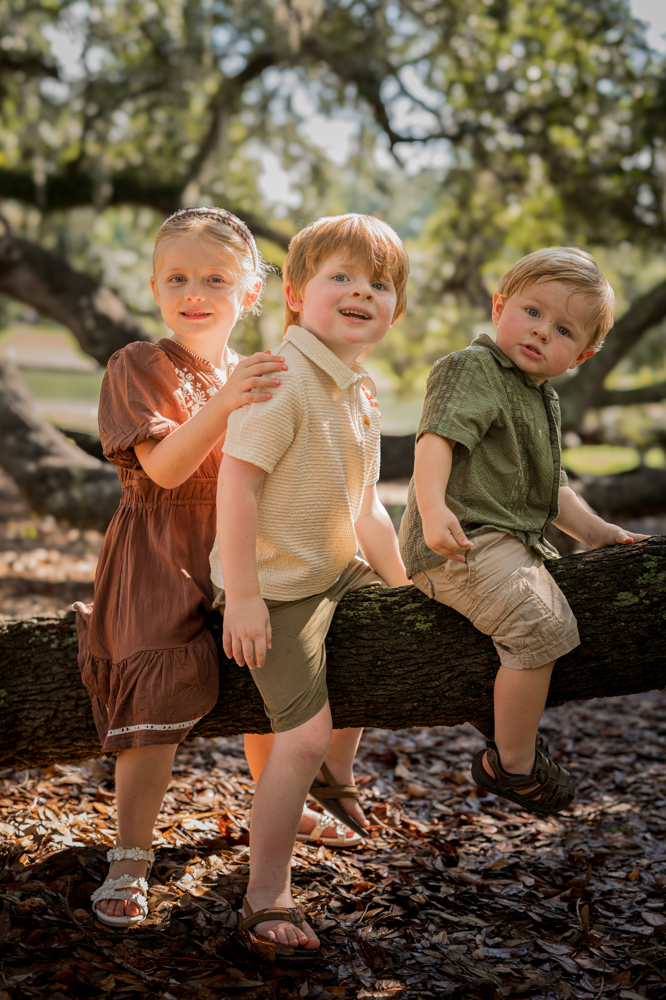

People
Family photography is at the heart of much of my work. I enjoy capturing the connection between people in a way that feels natural, warm, and genuine.
My family work includes traditional family portraits, maternity sessions, professional headshots, and everyday life. I aim for a balance of lightly guided portraits and candid moments so the final gallery feels polished without losing personality.
View family portraits